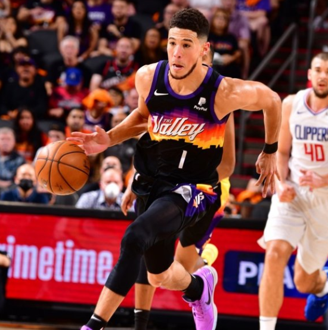

About Devin Booker

Who is he?
Devin Armani Booker was born on October 30, 1996 in Grand Rapids, Michigan. He's an NBA player who is currently in his 7th season for the Phoenix Suns as a Shooting Guard standing at 6'5". You might also know him as he is dating Kendall Jenner.
NBA Career
While only being 25 Booker has had a great start to his career. This season has been his best while averaging career highs 26.8 PPG, 4.7 AST, 5.0 REB. Last season he led his team to the 2020-2021 NBA Finals where they eventually lost to the Milwaukee Bucks in 6. Booker was able to lead his squad to the number 1 seed with a record of 64-18. The Suns are looking to be able to make another run and win the 2022 NBA championship finally.
College Career
Booker out of high school was a 4 star recruit and committed to play at the University of Kentucky. He was apart of the 2014-2015 team that ended up going 38-1 with there one loss choking in the final 4 against Wisconsin. While never a starter he did declare for the NBA draft and was selected by the Suns in round 1 pick 13.